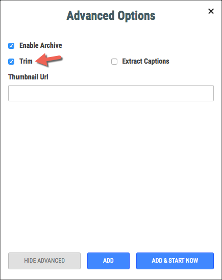
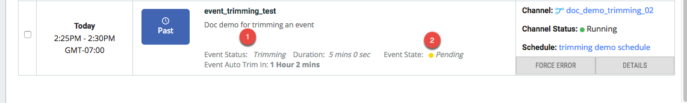
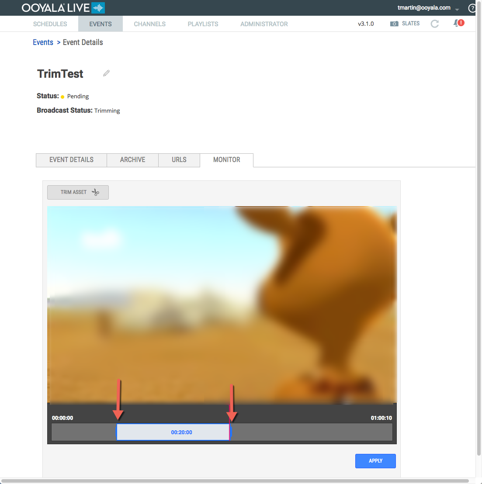

Trimming events is only available for event with Enable
Archive selected. Trimming events allows you to view and select what portion
of the event you want to archive.
Important: Events are automatically trimmed to the length of entire
event if you don't choose to trim the event yourself.
Only
-
Add an event with Trim selected.

To learn more about adding and event, see Add an
Event.
-
Go to the EVENTS details page and find your event.
.
(2) After your event has finished, it goes into
Pending state.
(2) When the
Event Status is Trimming,
you have time to go and trim the event yourself. Event Auto Trim
in indicates the time you have to manually trim the event
before it is automatically trimmed for you.
-
Click DETAILS for your event.
-
Go to the MONITOR tab on the event details page.
-
Drag the controls at either end of the clip to select what you want to
archive.

-
Click APPLY.
-
Monitor the status of the trimmed event from the EVENTS
details page.
Broadcast the trimmed event by using the event's embed code. You can also go to
Backlot to broadcast the asset with a content ID equal to the event embed code.
Note: The DVR window size of a trimmed event is re-sized to match the size of the final
event. This synchronizes the size of the event with the DVR window of the event,
providing a seamless broadcast transition from the event to the archived
asset.